VUOSI 2022
Joulukuu
23.12.


Taas on aika toivotella oikein hyvää ja rentouttavaa joulunaikaa kaikille kasvattieni omistajille, harrastus- ja treenikavereille ja muille ystäville ja tuttaville! Kiitos kuluneesta vuodesta ja toivottavasti saadaan jälleen ensi vuonna kokea paljon kivoja yhteisiä hetkiä koiramaisissa merkeissä!
17.12.
Pirjo päätti ottaa Karpon kanssa loppukirin saavuttaakseen vuoden 2022 tavoitteensa, neljä koulutustunnusta. Tänään siis jälleen kaksikko tokoili Oulussa, ja niinhän sieltä tuli kuin tulikin se kolmas avoimen luokan ykköstulos! Tulos tänään kokonaisuudessaan AVO1, KP, 289 pistettä ja sijoitus 1/8... ja se vuoden neljäs koulutustunnus, TK2!
Huikean paljon onnea ja kiitos että olette jaksaneet treenata ja harrastaa! ♥︎ Mitähän kaikkea te vielä ensi vuonna saattekaan aikaan!?
10.12.
Syksyn pienen tauon jälkeen Karpo ja Pirjo lähtivät jälleen tokoilemaan! Ja upeaa jälkeä jälleen; tuloksena tänään AVO1, KP ja sijoitus 1/4 pisteillä 300,5! Nyt se olisi sitten yhtä ykköstulosta vaille koulari!
Paljon onnea!
Lokakuu
15.10.
Karpo ja Pirjo tokoilivat tänään Oulussa AVO3-tuloksen pisteillä 205. Onnea jälleen!
2.10.
Eilisen rally-tokoilun jälkeen olikin Karpon ja Pirjon ohjelmassa kaksikon ensimmäinen tokokoe avoimessa luokassa. Koe oli Oulussa ja tuomarina toimi Päivi Kivelä. Tuloksena tänään huikean hienot pisteet 260 joka tarkoitti AVO1-tulosta ja tässä kokeessa sijoitusta 2/8! Kyllä olette tehneet upeaa työtä yhdessä, paljon onnea jälleen!

1.10.
Karpo (GM's Dude Has A Point) ja Pirjo rally-tokoilivat tänään Oulussa AVO-luokassa hienot 93 pistettä saavuttaen samalla RTK2 koulutustunnuksen. Paljon onnea!!
Syyskuu
24.9.
Tänään oli vihdoinkin se päivä, kun me päästiin Sansan kanssa kesän/syksyn ensimmäisiin, ja näillä näkymin myös tämän kauden viimeisiin kokeisiin. Viime kesän BH-kokeen jälkeen ollaan treenattu metsäjälkeä, esine-etsintää ja tottista tähtäimessä pk-jälkikoe, ja tarkoitus olikin mennä kokeeseen jo heinäkuussa. Pari viikkoa ennen koetta Sansalle sattui kuitenkin onnettomuus toisen koiran kanssa juostessaan, ja sen seurauksena menetettiin kolme yläetuhammasta. Murtuneiden hampaiden poiston jälkeen Sansa sai vielä komplikaation, ja loppujen lopuksi meille tuli noin kuukauden täysi tauko treenaamiseen. Onneksi Sansa kuitenkin toipui näillä näkymin täysin ennalleen... tai no, kolmea etuhammasta "kevyemmäksi"!
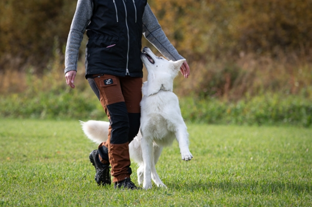
Nyt kuitenkin oltiin ehditty treenata kunnolla reilu kuukausi ja päästy tekemään myös muutamia koemittaisia vieraan tekemiä jälkiä, joten olin hyvillä mielin kun saatiin paikka Uuraisille Keski-Suomen Palveluskoirayhdistyksen järjestämään piirinmestaruuskokeeseen, joka samalla oli kelpieiden rotumestaruuskoe. Tuomarina kokeessa toimi Markku Korhonen ja harjoitusarvostelijana Matti Hautamäki.
Koepäivä alkoi koirien tarkastuksella ja jälkien arvonnalla, jonka jälkeen siirryttiin autoilla janoille odottelemaan omaa lähtövuoroa. Me saimmekin Sansan kanssa viettää metsätien varressa lähes 45 minuuttia, ennenkuin tuomari seurueineen saapui laittamaan meidät jäljelle. Sansa teki erinomaisen suoran janan ja löysi hienosti jäljen... mutta lähti reippaasti takajäljelle, kuten sillä on niin vahvasti ollut tapana. No, sattuneesta syystä sansa on myös mestari vaihtamaan suuntaa (niin, harjoitusta on valitettavasti siihen tullut), ja niinpä se kääntyi kuuliaisesti tuomarin huutaessa "takajälki", ja jatkoi suoraan jälkeä oikeaan suuntaan. Itse jäljestäminen sujui kulmia myöten täysin virheettä ja tarkasti ja kaikki 6 keppiä Sansa ilmaisi niinkuin se on opetettu. Hyvä Sansa! Pisteitä jäljeltä tuli 165/170 eli takajäljestä meni 5 pistettä.
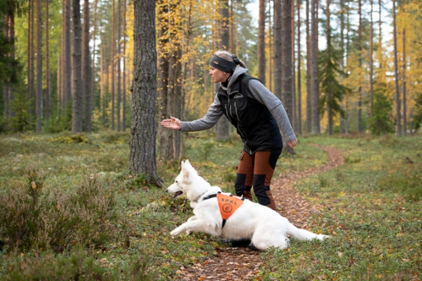
Seuraavaksi oli vuorossa jälleen kohtalaisen pitkän odotusajan jälkeen ruutu, jonne pääsimme seitsemäntenä koirakkona. Sansan esine-etsintä on parantunut paljon aivan viime viikkojen "tehotreenien" myötä; koira on kyllä tajunnut homman perusidean jo ajat sitten, mutta ongelmana on ollut ehkä hiukan hidas eteneminen ja etenkin Sansalle tyypillisesti vieraiden koirien hajut niin ruudussa kuin esineissä. Lisäksi Sansaa selkeästi ällöttää tietyt materiaalit suussa...
Tänään Sansa tekikin ruudun reippaasti ja ohjausta kuunnellen löysi ja toi vaadittavat kaksi esinettä hyvällä vauhdilla ja kivoilla luovutuksilla suoraan käteen, eikä aikaakaan paljoa tainnut tähän kulua. Yksi piste "rokotettiin" kuitenkin siitä, että ote esineistä olisi voinut olla hiukan tiukempi. Esine-etsinnästä saatiin siis 29/30 pistettä.
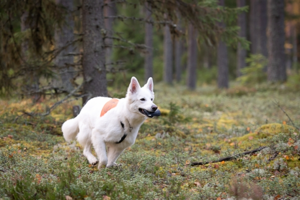
Maastot menivät siis todella hyvin, ja sen jälkeen ajeltinkin sitten Kyynämöisten kentälle tottisosuutta varten. Olin alun perin ajatellut, että meillä ei näin lajin ensikertalaisina ole kuin voitettavaa ja kokemuksien keräämistä kokeesta, mutta toki kun maastojen jälkeen oltiin tuloksessa kiinni, alkoi pieni koejännitys hiipiä hartioihin.
Meidän tottis alkoi ilmoittautumisen jälkeen liikkeillä parimme siirtyessä paikkamakuuta suorittamaan. Vaikka päivän alussa oma tunnelma oli ollut kohtalaisen rento, iski minuun tässä vaiheessa pieni rimakauhu ja koska Sansa on aivan valtavan herkkä minun mielentiloilleni, meni seuraaminen paikoitellen selvästi alle meidän tason. Onneksi kuitenkin sain itseni jonkin verran rennompaan mielentilaan jäävien liikkeiden alkaessa, ja siitä eteenpäin Sansa suorittikin liikkeet oman tasonsa ylärajoilla! Hienot jäävät, vauhdikas luoksetulo, asenteeltaan hyvä tasamaanouto (luovutusasento hiukan vino) ja reipas hyppynouto. Onnistuin heittämään kapulan kohtalaisen vinoon esteen yli ja hetken jo mietin että pitäisikö heitto uusia, mutta lähetin kuitenkin Sansa hyppyyn ja niinhän se vinosta lähestymisestä huolimatta teki myös paluuhypyn ja vieläpä suoran luovutuksen. A-esteen ylitys on yksi Sansan lempihommista ja sitten jäljellä olikin enää eteenmenoliike ja paikkamakuu. Eteenmenoliike oli vielä kuukausi sitten aika lailla kesken, ja Sansa tarvitsi näköhavainnon eteenmenopalkan viennistä. Kuitenkin viime viikkoina asia oli loksahtanut hyvin koiran mieleen, ja kokeessa Sansa tekikin yhden parhaista eteenmenoista tähän asti; pienen valmistavan osuuden ennakoinnin jälkeen se ampaisi suoraan ja hienolla vauhdilla eteenpäin ja meni maahan yhdellä käskyllä rintama menosuuntaan (kuten on yritetty opettaa)!
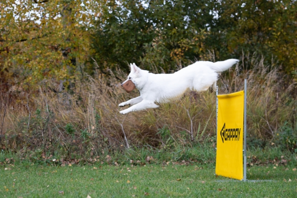
Paikkamakuussa oli alussa pientä maan haistelua, mutta paikoillaan Sansa pysyi ja yhdet käskyt riittivät koiran maahan laittamaan ja sen sieltä ylös nostamaan.
Niin vain saimme tottiksesta kasaan 93/100 pistettä eli kokeen loppupisteiksi tuli 287/300. Tämä tarkoitti 1-palkintoa ja koulutustunnusta JK1! Eipä paljon paremmin olisi voinut meidän koedebyytti mennä!
Sansan kanssa on kyllä ollut äärimmäisen kivaa ja erittäin opettavaista treenata niin kentällä kuin metsässä. Sansa on herkkä, niin ohjaajan mielentiloille kuin ympäristön häiriöille, ja se asettaa omat haasteensa. Mutta sitten toisaalta se on erittäin nopea oppimaan ja valtavan tunnollinen, ja sanonkin aina että jos mitään ylitsepääsemätöntä häiriötä ei tule, tekee Sansa varmasti asiat niinkuin on opetettu ja yrittää aina parhaansa. Ihana Sansa!
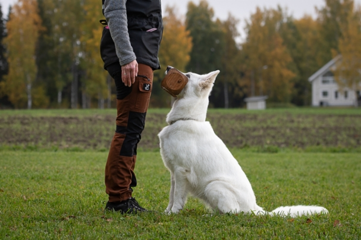
Nyt pidämme hiukan kevennettyä treeniohjelmaa loppusyksyn ajan ja Sansa saa nauttia hiukan kropan huollosta, lisäksi juoksut ovat alkamassa aivan lähiaikoina. Metsässä etsitään jälkiä lumen tuloon asti ja talven treenien jälkeen tavoitteena on jatkaa pk-jäljellä ensi kesänä jos molemmat pysytään kunnossa.
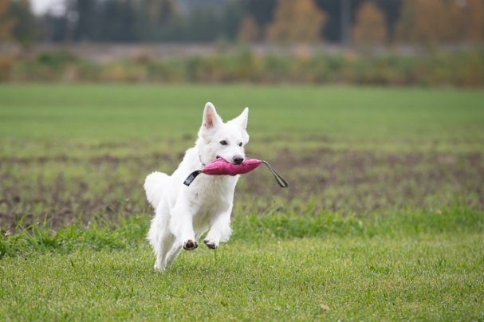
Yllä olevat Sansan treenikuvat on ottanut Lassi Alanen 2.10.2022. Lisää näitä kuvia voit katsoa TÄÄLTÄ
23.9.
Jälleen on suru-uutisten aika... Koda on tänään muuttanut sateenkaaren toiselle puolen, sinne missä vaivoja ei ole ja missä jatkuu ikuinen kesä.
RIP Gentle Miracle's Close To My Heart "KODA"
10.4.2015 - 23.9.2022
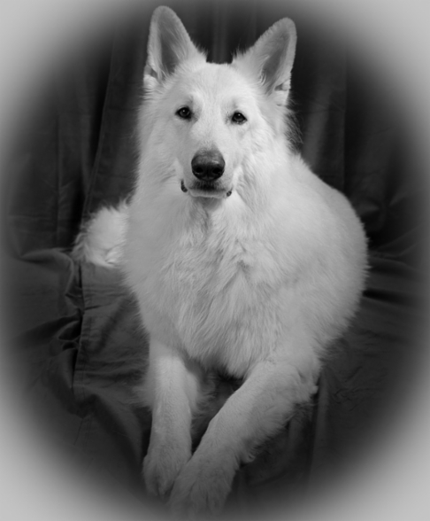
© Koiraseppä
"Anna anteeksi kyyneleet nää.
Ne surua on ja ikävää.
Me emme sua vielä antaneet ois,
vaan lähdit luo enkelten,
luotamme pois.
Niin, koskaan ei tiedä,
onko aikaa paljon vai vähän,
yht'äkkiä huomaa,
nyt päättyi se tähän."
Kodan omistajat joutuivat tekemään raskaan päätöksen säästääkseen Kodan kivuilta ja enemmiltä oireilta sen jälkeen, kun huonon olon syyksi paljastui mahalaukun kasvain. Vaikka kuinka tietää, että päätös on ainoa oikea, ei se tee asiaa yhtään helpommaksi. Se on suurin rakkauden teko vakavasti sairaalle parhaalle ystävälle.
Olen niin valtavan pahoillani, Nina ja Ville. Otan sydämestäni osaa menetykseenne. Ja samalla kiitän teitä parhaasta mahdollisesta kodista, minkä Kodalle annoitte, sekä myös siitä rohkeudesta päästää irti kun se oli Kodan parhaaksi. Muistot elävät ikuisesti ja tassunjäljet pysyvät sydämessänne!
Hyvää matkaa rakas Koda...
4.9.
Oulun Koronatuki-näyttelyssä valkkarit arvosteli tänään Anita Al-Bachy, Karpo ja Pirjo olivat mukana avoimessa luokassa, valkkareita oli yhteensä ilmoitettu 14 kpl. Karpon tulos oli tänään AVO/EH, AVK1, eli viimeisen sertin metsästys jatkuu edelleen! Onnea Pirjo ja Karpo!
Elokuu
21.8.
Pirjon ja Karpon vepe-viikonloppu jatkui vielä tänään Heinävedellä, jossa parivaljakko keräsi tällä kertaa enemmän kokemusta kuin tulosta (41 pistettä, VOI0). Mutta on se Karpo melkoinen vesipeto ja uimamaisteri ja Pirjo aivan huikea ohjaaja tässä(kin) lajissa!
20.8.
Tänään Karpo (GM's Dude Has A Point) ja Pirjo olivat jälleen vepe-kokeessa, tällä kertaa Joensuussa. Ja niinhän se Karpo uiskenteli ensimmäisen voittajaluokan ykköstuloksen; 91 pistettä ja VOI1! Isot onnittelut!

13.8.
Karpon (GM's Dude Has A Point) ja Pirjon ensimmäinen startti vepen voittajaluokassa oli tänään Oulussa, tuloksena hienosti 74 pistettä ja VOI3-tulos. Siitä se lähtee!
Heinäkuu
24.7.
Karpon ja Pirjon näyttelykierros jatkui tänään Kalajoki KV:ssa. Tuomari oli kaukaa Australiasta ja nimeltään Valerie Carter. Karpon tuloksena oli tänään hienosti AVO ERI/2, SA ja VARA-SERT. Hienosti suoriuduttu jälleen, onnea!

16.7.
Ja tänään olikin sitten Karpo vuorostaan kehässä Tornio NORD-näyttelyssä, jossa tuomarina valkkareilla toimi Perttu Ståhlberg. Ja jos meidän kannatti Sansan kanssa viikko sitten lähteä Ristiinaan, niin totisesti kannati Karpon ja Pirjon lähteä tänään Tornioon; Karpo tänään mahtavasti AVO ERI/1, SA, PU1, SERT, NORD-SERT ja ROP! Valtavasti onnea Pirjo ja Karpo! ♥︎
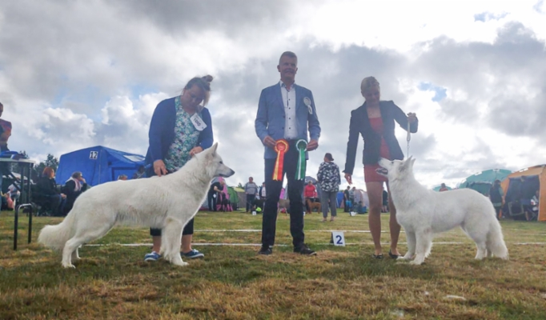
ROP Gentle Miracle's Dude Has A Point ja VSP Dancing Spirit Bring It On

9.7.
Sansan kanssa ajeltiin aamuvarhaisella näyttelyreissulle Ristiinaan, jossa Ristiina KR-näyttelyssä valkkareita arvosteli tuomarimuutoksen jälkeen Leni Finne. Sansa esiintyi varsin mallikkaasti ja yllätti kyllä minut täydellisesti menestyksellään tänään; AVO ERI/1, SA, PN1, SERT ja ROP! Omasta mielestänihän Sansa on maailman kaunein pikkuneiti, mutta tänään tuomarikin oli samaa mieltä. Nyt on siis kaksi sertiä takataskussa!
Ryhmäkehää emme vesisateessa jääneet sitten kuitenkaan odottelemaan, valkkarit kun olivat rotukehässään jo heti aamulla.
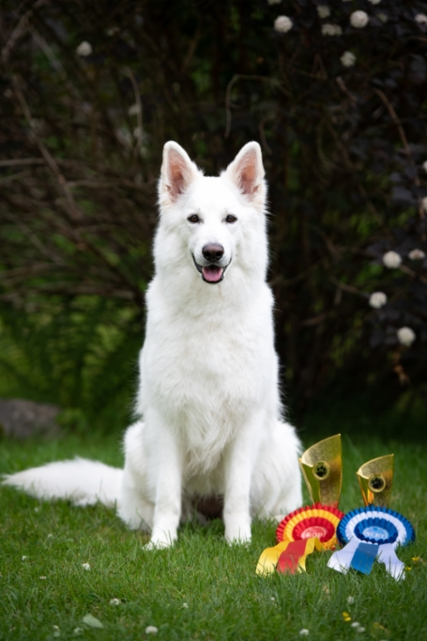
4.7.
Tänään oli se päivä, kun Elvis matkasi sateenkaaren toiselle puolen sinne, missä jalat kantavat jälleen ja kipua ei ole olemassakaan...
RIP Gentle Miracle's Born to Be Wild "ELVIS"
19.5.2012 - 4.7.2022
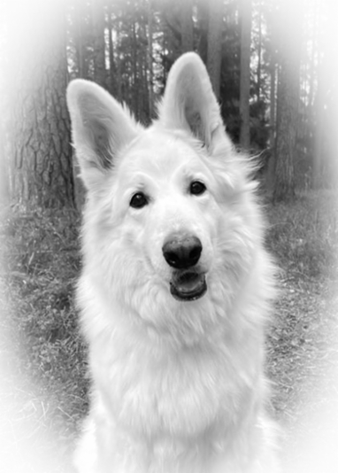
"Kauniina nauhana vuosien päivät,
helminä jokainen muistoiksi jäivät.
Elämän päivien ketju on kallis,
helmist` en yhdenkään kadota sallis.
Koskaan ei tiedä,
onko aikaa paljon vai vähän.
Yht'äkkiä huomaa,
se päättyikin tähän.
muistot kauniit voimaa antaa,
surun raskaan hiljaa kantaa.
Ei jaksanut sydän kultainen,
vaan lähdit luokse pilvien valkeiden.
Kyyneleet eivät tuo sinua takaisin,
vaikka hetkellisesti sitä toivoinkin.
Katseesi kopin pienessä ikkunassa,
on vieläkin muistoissani olemassa.
Talletan tuon kuvan syvälle sydämeen,
kun pyyhin silmäkulmastani kyyneleen.
Nuku siis rauhassa syvää unta,
ympärilläsi sateenkaaren valtakunta."
Kiitos Jenny jokaisesta niistä kymmenestä vuodesta, joina Elvis sai nauttia rakkaudestasi ja huolenpidostasi! Niin raastavaa kuin se onkin, on suurin rakkauden teko se viimeinen; päästää ystävä pois silloin kun mikään hoito ei enää auta ja mikään lääkitys ei tee päivistä kivuttomia.
Hyvää matkaa Elvis, uskon että tapaat vielä äidin ja sisarukset siellä jossain...
2.7.
Karpo-mies se uiskenteli tänään Uuraisilla Pirjon taitavassa ohjauksessa vepe-kokeessa kolmannen (peräkkäisen) AVO1 tuloksen täysin pistein ja niin tuli tälle parivaljakolle käteen menolippu voitajaluokkaan! Kerrassaan huikeaa tekemistä, isot onnittelut jälleen kerran Pirjo ja Karpo!

GM's Dude Has A Point KARPO AVO1, 100/100p, 1.sija
Kesäkuu
24.6.
Hyvää Juhannusta kaikille!

18.6. ja 19.6.
Karpon (GM's Dude Has A Point) ja Pirjon vepe-kausi alkoi Oulussa mahtavilla tuloksilla! Viikonlopun molemmilta päiviltä tuloksena AVO1, 100/100 pistettä ja 1.sija! Huikeasti paljon onnea!

18.6.2022 VEPE AVO1 100p. 1.sija

19.6.2022 VEPE AVO1 100p. 1.sija
Toukokuu
27.5.
Tänään tulivat Kennelliitosta Trickin (GM's Dazzling Magic Trick) viralliset spondyloosi- ja olkanivellausunnot, ja aikas mahtava on Trickin luustoterveystulosten rivi:
Lonkat: A/AKyynärät: 0/0
Selkä: LTV0, VA0, SP0
Olkanivelet: terve/terve
Onnea ja kiitos Marjo!
26.5.
Päästiinpä mekin Sansan kanssa näyttelyihin, ensimmäistä kertaa tänä vuonna. Edellinen näyttely viime syksynä Jyväskylässä meni lähinnä tasajalkahyppelyksi Sansan taholrta, joten tänään olinkin varsin hämmästynyt miten hienosti tyttö nyt malttoi esiintyä; Sansa juoksi varsin maltilla raviaskeleella vaikka sekä edessä että takana meni toinen koira eikä kehäkään ollut koolla pilattu. Piti kyllä kovasti harjoitella ennen näyttelyä, mutta onneksi ei haitannut vaikka näyttelytreenejä ei koskaan saatukaa aikaiseksi!
Valkkareita Kangasniemen KR-näyttelyssä oli kaikkiaan 13 ja tuomarina toimi Maija Lehtonen. Sansa oli kuuden avoimen luokan nartun joukossa toinen tuloksella AVO ERI/2. Arvostelu oli hyvä, mutta toivetta matalammasta kintereestä en kyllä itse allekirjoita. :-)
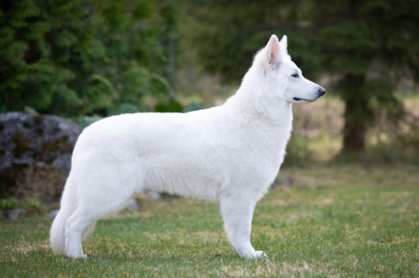
(Kuva otettu näyttelyä edeltävänä päivänä 25.5.2022 omalla pihalla)
"2-vuotias kaunis, tasapainoinen nuori narttu. Kokoon sopiva luusto. Kaunisilmeinen pää, keskiruskeat silmät, kirsupigmentti voisi olla tummempi. Hyvä kaula ja ylälinja, sopiva runko. Hyvät kulmaukset. Kinner voisi olla matalampi. Hyvä häntä. Sujuva sivuliike. Hyvä karva."
19.5.
Niin on jo kulunut 10 vuotta GM's B-pentujen, Nellin ja Luckyn lasten, syntymästä. Aivan liian moni näistä Nellin toisista lapsista on jo siirtynyt koirien taivaasteen äitinsä luokse, ja tänään syntymäpäivää täällä meidän luonamme viettävät enää Stara ja Elvis. Toivotan paljon onnea onnea ja herkkuja tänään 10-vuotiaille B-lapsille!
Paljon onnea 10-vuotiaille B-pennuille Staralle ja Elvikselle!
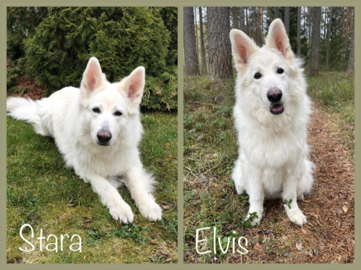
18.5.
Tänään saimme niin kovin surullisia uutisia... Nellin ja Luckyn komea poika Camaz on tänään matkannut sateenkaarisillalle, vain päivää vaille 10 vuoden iässä.
RIP Gentle Miracle's Be My Lover "CAMAZ"
19.5.2012 - 18.5.2022
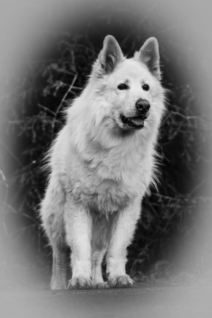
Jenna, olen niin valtavan pahoillani, että jouduit päästämään Camazin jo pois luotasi. Samalla olen kiitollinen, että Camaz sai aikanaan luonasi rakastavan ja hyvän kodin.
Mutta kun kipu on jatkuva seuralainen eivätkä lääkkeetkään tuo enää helpotusta, on suurin rakkauden teko antaa ystävän sulkea silmänsä viimeisen kerran ja nukkua syliin ikiuneen. Vaikka se särkee sydämen. ♥︎
7.5.
Oulu NORD-näyttelyssä tänään kehässä pyörähtivät jälleen Karpo (GM's Dude Has A Point) ja Pirjo. Tuomarina valkkareilla toimi Rade Dakic Serbiasta. Karpo sai hienon arvostelun tuloksella AVO ERI/1, SA ja jäi lopulta vain himpun verran toisesta sertistä ollen PU3 ja saaden varasertin. Paljon onnea jälleen Pirjo ja Karpo!
Huhtikuu
24.4.
Ja Karpon ja Pirjon rally-toko-viikonloppu jatkui tänään Oulussa, pisteitä napsahti vielä pari enemmän kuin eilen ja tulos tänään AVOHYV ja 96/100 pistettä. Karpo ja PIrjo jatkavat siis kohti toista rallyn koularia! Onnea!
23.4.
Karpo (GM's Dude Has A Point) korkkasi Pirjon kanssa Oulussa rally-tokon avoimen hienolla tuloksella AVOHYV, 94/100 pistettä ja 3.sija! Onnea taitaville!
10.4.
Voi miten vuodet vierivätkään nopeaan! Tänään tuli kuluneeksi jo seitsemän vuotta, kun Nukan ja Moran lapset syntyivät Turussa Piian ja Janin luona. Se kevät oli minulle varsinaista autoilun juhlaa kun ajelin aina viikonlopuiksi pentuja katsomaan ja paapomaan. Paljon ihania muistoja liittyy tuohon kevääseen 2015.
Paljon paljon onnea ihanat Taika, Lumi, Mila, Karkki, Kelmi, Konsta, Koda, Gizmo ja Roki!
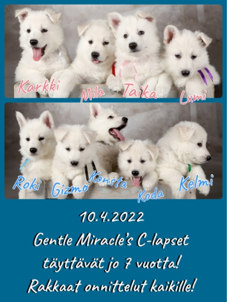
9.4.
Tornion ryhmänäyttelyssä tänään kehässä esiintyi myös Karpo (GM's Dude Has A Point) varahandlerin kanssa. Tuomarina Torniossa oli Anita Al-Bachy. Karpo esiintyi hienosti, kuten yleensäkin, mutta se onneton häntä! Kovin rinta rottingilla Karpo häntäänsä liikkeessä esittelee, ja se maksoi tuomarin mukaan tänään SA:n. Hienolla arvostelulla kuitenkin AVO ERI/1! Paljon paljon onnea!
"Oikeat mittasuhteet. Hyvä raajakorkeus. Hyvä purenta. Hyvä pigmentti. Aavistuksen pyöreät silmät. Hyvä kaula ja ylälinja. Hyvä runko. Riittävä luusto. Tasapainoiset kulmaukset. Kantaa häntäänsä turhan korkealla laarella liikkuessaan. Hyvä karvan laatu."
Maaliskuu
26.3.
Kevään ahkerimmat kokeissakävijät ovat ehdottomasti Karpo (GM's Dude Has A Point) ja Pirjo! Tänään Oulussa he rallytokoilivat alokasluokassa mahtavat 97 pistettä ja sitä myöten ensimmäisen koulutustunnuksen RTK1 myös tässä lajissa! Paljon onnea taitaville!
12.3.
Karpo (GM's Dude Has A Point) ja Pirjo osallistuivat tänään Kempeleessä kolmansiin alokasluokan tokokokeisiinsa, ja kolmas ykköstulos oli siinä! ALO1 pistein 179,5 toi Karpolle koulutustunnuksen TK1, sijoitus tänään hienosti 3/10!
Aivan huippua, paljon onnea Pirjo ja Karpo!
Tammikuu
8.1.
Vuoden ensimmäisestä koetuloksesta vastasivat Gizmo (GM's Cheeky Gremlin) ja Annette, jotka saivat tänään Salossa kolmannen hyväksytyn tuloksen rally-tokon alokasluokasta 72 pisteellä ja sitä myöten RTK1-koulutustunnuksen!
Lämpimät onnittelut Nette ja Gizmo!
1.1.
Hyvää alkanutta uutta vuotta 2022!
Uuden vuoden alkaessa tulee mietittyä jälleen tarkemmin suunnitelmia ja tavoitteita, joita kohden pyrkiä tämän vuoden aikana. Oma tavoitteeni on Sansan kanssa harrastuspuolella jälkikokeeseen osallistuminen ja toki haaveena sieltä tuloksenkin saaminen. Sitä kohden treenataan talvi ja etenkin kevät, katsotaan sitten minne asti selvitään tämän vuoden aikana. Kesällä toivottavasti päästään parissa näyttelyssäkin käymään, toivottavasti korona ei tänä vuonna rajoita toimintaa ja harrastuksia.
Valtaosa ajasta vietetään kuitenkin sitä "tavallista" arkea, ja siitä pyritään nauttimaan ainakin yhtä paljon kuin harrastuksista. Näin pakkasten paukkuessa ja lumen peittäessä parhaat metsätaipaleet ei voi olla haaveilematta jo kesän valoisista metsäretkistä, mutta nautitaan nyt ensin talvesta niin ulkona kuin sisällä takkatulen lämmössä. Ja koitetaan pysyä terveinä, niin koirat kuin ihmisetkin!